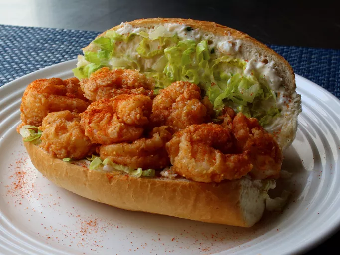

Home
Banana Bread Pancakes

Description
Inspired by a shrimp po' boy with crab mayo seen on "Diners, Drive-Ins and Dives," I decided to create an extra
spicy recipe—firecracker shrimp roll with crab aioli—and give it a July Fourth-friendly name. The result is an
explosively flavored combination of hot, crunchy shrimp and cold crabby mayo—it was one of the best things I've
had in a long time, and that's after eating it barely warm. For best results, enjoy this just as soon as it's
safe to eat, in all its crunchy glory.
Ingredients
This is intended for 6 servings
Crab Aioli:
- 1 cup mayonnaise
- 1 cup lump crab meat
- 1 tablespoon chopped fresh tarragon
- 2 cloves garlic, finely minced
- 1 teaspoon fresh lemon juice
- ¼ teaspoon Worcestershire sauce
- 1 pinch cayenne pepper
- salt to taste
- 2 pounds shrimp, peeled and deveined
Buttermilk Soak:
- 1 cup buttermilk
- 2 teaspoons hot sauce
- 2 teaspoons cayenne pepper
- 2 teaspoons kosher salt
- 1 teaspoon ground chipotle pepper
- 1 teaspoon freshly ground black pepper
Breading:
- 1 cup all-purpose flour
- ⅓ cup cornmeal
- 2 teaspoons paprika
- 2 teaspoons kosher salt
- 6 soft sandwich rolls
- 2 cups thinly sliced romaine lettuce
- canola oil for frying
- 1 pinch cayenne pepper
Steps
- Combine mayonnaise, crabmeat, tarragon, garlic, lemon juice, Worcestershire sauce, and 1 pinch cayenne
pepper in a bowl; season with salt and stir to combine. Refrigerate aioli until ready to use.
- Remove tails from shrimp; refrigerate until ready to use.
- Preheat the oven to 400 degrees F (200 degrees C).
- Whisk buttermilk, hot sauce, 2 teaspoons cayenne pepper, 2 teaspoons kosher salt, ground chipotle, and black
pepper together in a bowl; set aside. Combine flour, cornmeal, paprika, and 2 teaspoons kosher salt in a
shallow dish; set aside.
- Slice sandwich rolls partway; split open. Scoop out some bread from tops. Toast in the preheated oven until
crisp, 7 to 10 minutes.
- Soak shrimp in buttermilk mixture for about 5 minutes.
- Meanwhile, heat oil in a deep skillet over medium-high heat. Spread crab aioli generously over both sides of
each roll; top with sliced lettuce. Toss shrimp in cornmeal mixture to coat; shake off excess.
- Lower shrimp carefully into the hot oil in batches until golden brown and crispy, about 2 minutes per side.
Drain on a paper towel-lined plate; immediately transfer shrimp to rolls. Sprinkle cayenne pepper on top.
Repeat with remaining shrimp.